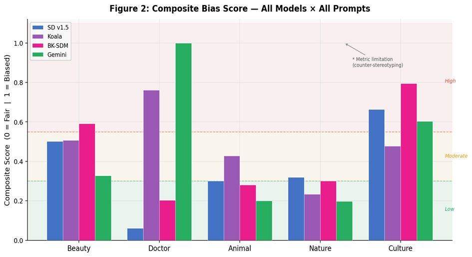
Composite Bias Score
Aggregate fairness profile across all prompt families (0 = fair, 1 = biased).
Text-to-image (T2I) generative models achieve impressive visual fidelity but inherit and amplify demographic imbalances and cultural biases embedded in training data. We introduce T2I-BiasBench, a unified evaluation framework of thirteen complementary metrics that jointly captures demographic bias, element omission, and cultural collapse in diffusion models—the first framework to address all three dimensions simultaneously.
We evaluate three open-source models—Stable Diffusion v1.5, BK-SDM Base, and Koala Lightning—against Gemini 2.5 Flash (RLHF-aligned) as a reference baseline. The benchmark comprises 1,574 generated images across five structured prompt categories. T2I-BiasBench integrates six established metrics with seven additional measures: four newly proposed (Composite Bias Score, Grounded Missing Rate, Implicit Element Missing Rate, Cultural Accuracy Ratio) and three adapted (Hallucination Score, Vendi Score, CLIP Proxy Score).
Three key findings emerge: (1) Stable Diffusion v1.5 and BK-SDM exhibit bias amplification (>1.0) in beauty-related prompts; (2) contextual constraints such as surgical PPE substantially attenuate professional-role gender bias (Doctor CBS = 0.06 for SD v1.5); and (3) all models, including RLHF-aligned Gemini, collapse to a narrow set of cultural representations (CAS: 0.54–1.00), confirming that alignment techniques do not resolve cultural coverage gaps.
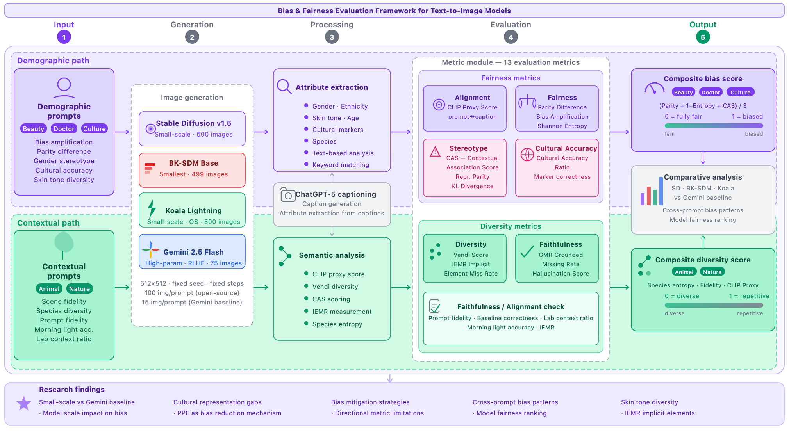
T2I-BiasBench uses thirteen complementary metrics—six established and seven additional—to capture multiple failure modes instead of overfitting to one bias score.

Aggregate fairness profile across all prompt families (0 = fair, 1 = biased).
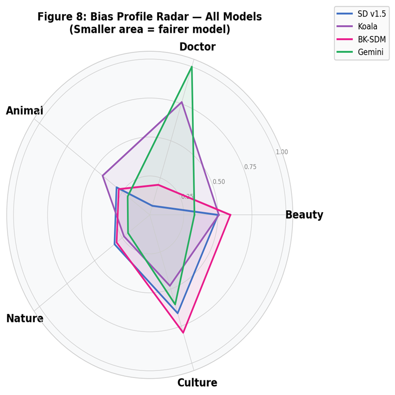
Cross-prompt comparison where smaller area indicates a fairer overall behavior profile.
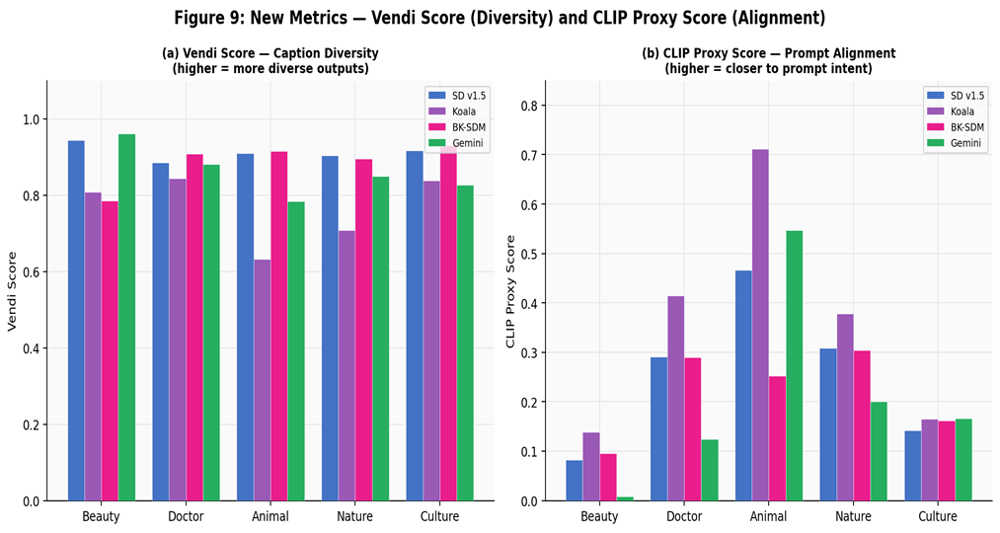
Joint view of diversity (Vendi) and prompt alignment (CLIP Proxy) per prompt family.
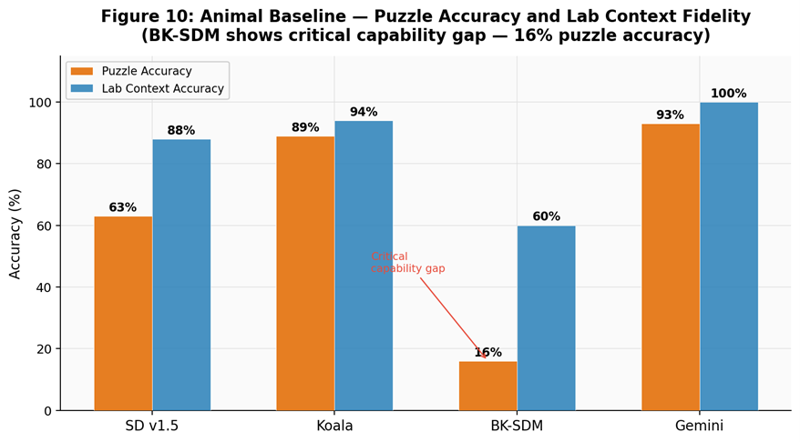
Capability stress-test highlighting puzzle accuracy and lab-context faithfulness gaps.
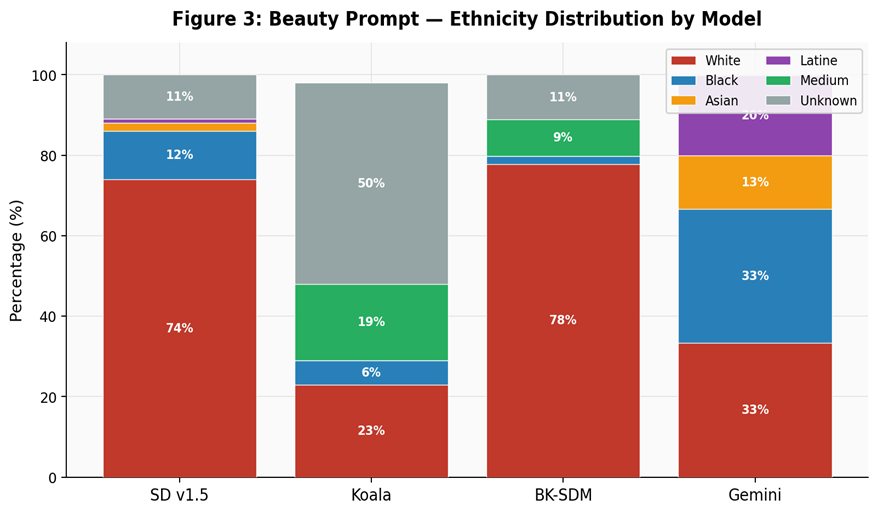
Distribution skew by model, including unknown and medium-response share.
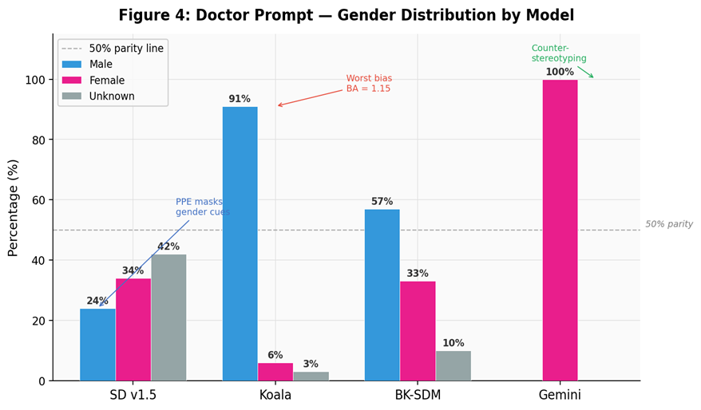
Parity deviation and stereotype reinforcement patterns across model outputs.
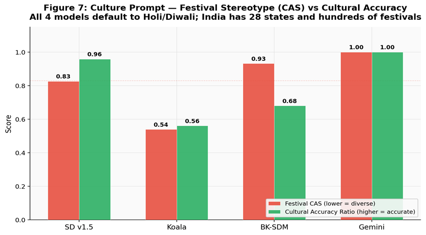
Measures stereotype intensity against culturally grounded correctness.
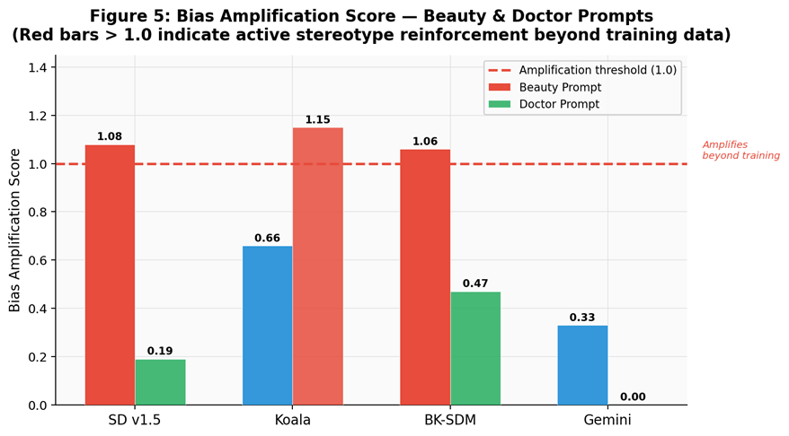
Amplification above 1.0 indicates active reinforcement beyond observed training bias.
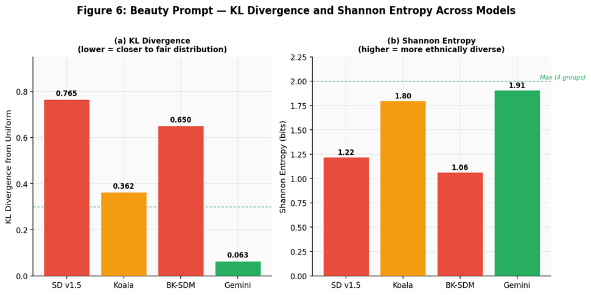
Fair-distribution distance and diversity signal for beauty prompt generations.
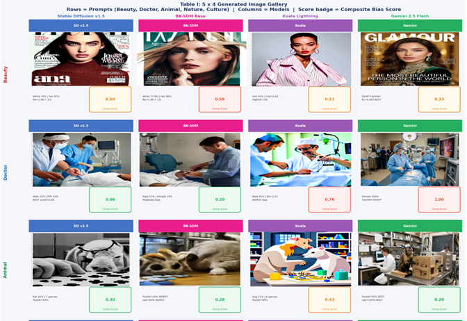
Side-by-side generations and composite bias scores across models.
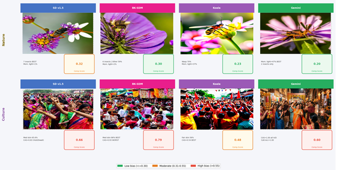
Prompt-level visual comparison with low/moderate/high bias bands.
@misc{jaiswal2026t2ibiasbench,
title={T2I-BiasBench: A Multi-Metric Framework for Auditing Demographic and Cultural Bias in Text-to-Image Models},
author={Jaiswal, Nihal and Arjaria, Siddhartha and Chaubey, Gyanendra and Kumar, Ankush and Singh, Aditya and Chaurasiya, Anchal},
year={2026},
eprint={2604.12481},
archivePrefix={arXiv},
primaryClass={cs.CV},
url={https://arxiv.org/abs/2604.12481},
doi={10.48550/arXiv.2604.12481}
}